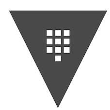
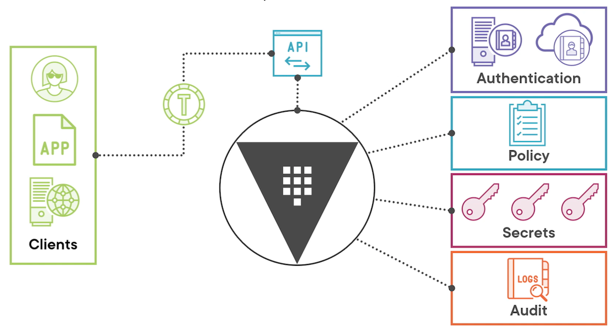
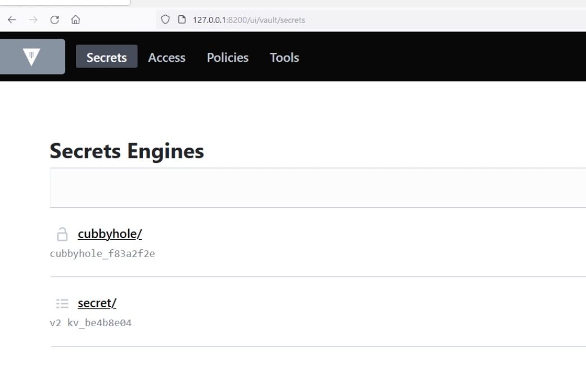

L1 HashiCorp Vault Overview and Installation
1 Course Overview
Learning Path
- Installing and Configuring Hashicorp Vault
- Managing HashiCorp Vault Server
- Managing Accessand soretsinHashicorp Vault
- Integrating HashiCorp Vault in CI/CD Pipelines
Dev Path
- Running the development instance
- Designing a deployment
- Deploying Vault server
- Configuring high availability
- Managing encryption and seal keys
- Configuring authentication and secrets
- Setting up auditing and monitoring
HashiCorp Vault
- Secrets lifecycle manager
- Written in Go
- Multiple operating systems
- Same binary for client/server

Vault Conceptual Architecture

2 Running the Development Instance
Installing Vault
# First we will install Vault, pick the steps for your OS
# If you're using a different flavor of Linux, check out
# the directions available here: https://learn.hashicorp.com/tutorials/vault/getting-started-install?in=vault/getting-started#install-vault
# MacOS
brew tap hashicorp/tap
brew install hashicorp/tap/vault
# Ubuntu
curl -fsSL https://apt.releases.hashicorp.com/gpg | sudo apt-key add –
sudo apt-add-repository "deb [arch=amd64] https://apt.releases.hashicorp.com $(lsb_release -cs) main"
sudo apt-get update && sudo apt-get install vault
# Now let's verify it installed successfully and is in the PATH
# environment variable
vault version
$ vault version
Vault v1.12.1 (e34f8a14fb7a88af4640b09f3ddbb5646b946d9c), built 2022-10-27T12:32:05Z
Running Vault in Development Mode
- Running on localhost without SSL
- In-memory storage
- Starts unsealed with token cached
- UI enabled
- Key/Value secrets engine enabled
Dev Server
vault server -dev -dev-root-token-id=86753098675309
# Launch Vault in development mode
vault server –dev
# Store Vault server address in environment variable
# Linux and macOS
export VAULT_ADDR=http://127.0.0.1:8200
# Windows PowerShell
$env:VAULT_ADDR="http://127.0.0.1:8200"
# Log into Vault
vault login
Vault CLI
# Basic vault command structure
vault <command> <subcommand> [options] [ARGUMENTS]
# Getting help with vault
vault <command> -help
vault path-help PATH
Environment
VAULT_ADR- Address of the Vault serverVAULT_TOKEN- Token value for requestsVAULT_SKIP_VERIFY- No verify TLS certVAULT_FORMAT- Specify output format
# Try the CLI
# Check for the root token
vault token lookup
$ vault token lookup
Key Value
--- -----
accessor zCpAz878fjNacWJjveqTVj2R
creation_time 1669855234
creation_ttl 0s
display_name root
entity_id n/a
expire_time <nil>
explicit_max_ttl 0s
id hvs.xdqJDIY7fbqrz9oj2hs63nEq
meta <nil>
num_uses 0
orphan true
path auth/token/root
policies [root]
ttl 0s
type service
# List out the secrets engines
vault secrets list
$ vault secrets list
Path Type Accessor Description
---- ---- -------- -----------
TestKV/ kv kv_a4bf358a Test K/V version 2
consul/ consul consul_2ad1fcb7 n/a
cubbyhole/ cubbyhole cubbyhole_c4a23e97 per-token private secret storage
identity/ identity identity_20b0ef66 identity store
secret/ kv kv_cdd1aa1f key/value secret storage
sys/ system system_75379b69 system endpoints used for control, policy and debugging
# Write a secret
vault kv put secret/hg2g life=42
$ vault kv put secret/hg2g life=42
== Secret Path ==
secret/data/hg2g
======= Metadata =======
Key Value
--- -----
created_time 2022-12-04T13:24:10.534958Z
custom_metadata <nil>
deletion_time n/a
destroyed false
version 1
List out the auth methods
$ vault auth list
Path Type Accessor Description Version
---- ---- -------- ----------- -------
token/ token auth_token_47fd36e5 token based credentials n/a

we have four different categories,
- secrets for secrets engines,
- access for authentication methods,
- policies for dealing with access policies,
- Some general tools that are available within vault.
Using the Vault API
- RESTful
- Used by Ul and CLI
- Only way to interact with Vault
- curl with
X-Vault-Tokenheader
export VAULT_TOKEN=hvs.xdqJDIY7fbqrz9oj2hs63nEq
$ curl -H "X-Vault-Token: $VAULT_TOKEN" \
> -X GET \
> $VAULT_ADDR/v1/secret/data/hg2g | jq
% Total % Received % Xferd Average Speed Time Time Time Current
Dload Upload Total Spent Left Speed
100 310 100 310 0 0 31003 0 --:--:-- --:--:-- --:--:-- 302k
{
"request_id": "8d45e8b1-8c8c-c4e2-cc1f-a25d4e00f596",
"lease_id": "",
"renewable": false,
"lease_duration": 0,
"data": {
"data": {
"life": "42"
},
"metadata": {
"created_time": "2022-12-04T13:24:10.534958Z",
"custom_metadata": null,
"deletion_time": "",
"destroyed": false,
"version": 1
}
},
"wrap_info": null,
"warnings": null,
"auth": null
}
Module Summary
- Vault installation process
- Vault development instance
- Interaction options